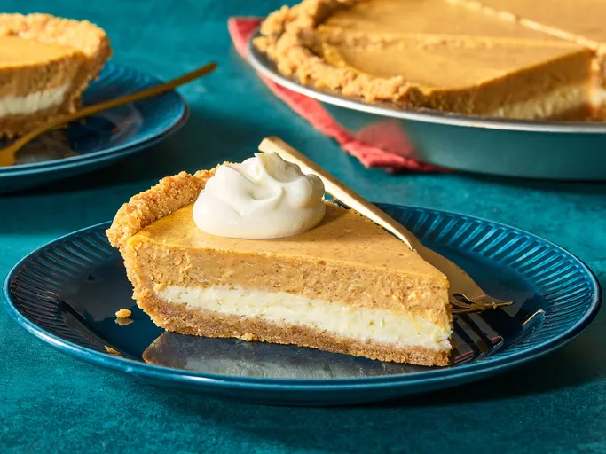

Cheesecake

Description
Cheesecake is a sweet dessert consisting of a mixture of soft, fresh cheese, eggs, and sugar on a crust made from crushed cookies or graham crackers. It can be baked or unbaked and is often flavored with vanilla, chocolate, or fruit.
Ingredients
- 1 1/2 cups graham cracker crumbs
- 1/4 cup sugar
- 1/2 cup unsalted butter, melted
- 4 (8-ounce) packages cream cheese, softened
- 1 cup sugar
- 1 teaspoon vanilla extract
- 4 large eggs
- 1 cup sour cream
- 1/4 cup all-purpose flour
- 1/4 teaspoon salt
- Fresh fruit or fruit sauce, for topping (optional)
- Chocolate ganache, for topping (optional)
- Whipped cream, for serving (optional)
- Chocolate shavings, for garnish (optional)
- Caramel sauce, for drizzling (optional)
- Chopped nuts, for garnish (optional)
- Powdered sugar, for dusting (optional)
Instructions
- Preheat the oven to 325°F (160°C).
- In a medium bowl, combine the graham cracker crumbs, sugar, and melted butter. Press the mixture into the bottom of a 9-inch springform pan to form the crust.
- In a large mixing bowl, beat the cream cheese until smooth. Add the sugar and vanilla extract, and mix until well combined.
- Add the eggs one at a time, mixing well after each addition. Add the sour cream, flour, and salt, and mix until smooth.
- Pour the cream cheese mixture over the crust in the springform pan.
- Bake for 50-60 minutes or until the center is set and slightly jiggly.
- Turn off the oven and leave the cheesecake in the oven with the door ajar for 1 hour to cool gradually.
- Remove from the oven and let it cool completely at room temperature. Refrigerate for at least 4 hours or overnight before serving.
- Top with fresh fruit, chocolate ganache, or whipped cream if desired.
- Slice and serve chilled.
Home